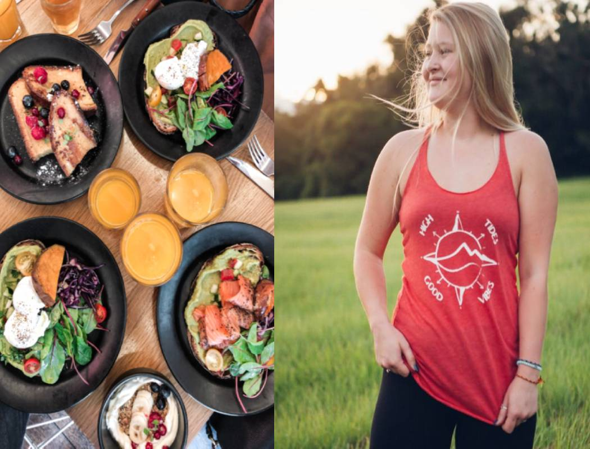

Regola #1 per Perdere Peso in modo Ottimale - Ottieni il tuo PIANO ALIMENTARE!
Se vuoi cucinare cibi tradizionali
L'ultimo decennio di food writing ha dimostrato che i libri di cucina sono solo la punta dell'iceberg culinario. Se le nostre scelte migliori hanno qualcosa da mostrare per questo, i libri di cibo moderni includono memorie di grandi chef e resoconti di saggistica di diverse sezioni dell'industria alimentare. Anche i migliori libri di cucina richiedono un pizzico di personalità e un pizzico di storia.
Da una splendida enciclopedia di piatti d'autore dai ristoranti di tutto il mondo a un tuffo profondo nel modo in cui i sistemi alimentari dovranno adattarsi a un pianeta più caldo e popolato, quest'anno i libri alimentari offrono qualcosa per tutti i gusti.
Redzepi, chef del rinomato ristorante Noma, si sentiva irrequieto nonostante i suoi ristoranti stessero crescendo con successo. Quando entrò in contatto con Jeff Gordinier, trovò l'allora scrittore di New York Timesstaff in una crisi personale e professionale. Nella loro comune fame di rischio e reinvenzione, i due uomini hanno trovato un terreno comune che li avrebbe legati durante un'odissea culinaria di quattro anni. In Hungry, Gordinier racconta questa avventura dalla raccolta di fichi nei parchi intorno a Sydney alla caccia ai ricci di mare nel circolo polare artico con vivida prosa che sicuramente ti farà venire l'acquolina in bocca.
A soli 30 anni, Kwame Onwuachi ha già abbastanza esperienza di vita da riempire un libro di memorie. A soli 20 anni, lo chef nigeriano-americano è apparso come concorrente in Top Chef, ha aperto e chiuso un ristorante di menu di degustazione d'élite, finalmente trovato il suo posto come executive chef presso Kith / Kin a DC e fu nominato James Beard Foundation 2019 Rising Star Chef of the Year. Ma prima del suo ingresso esplosivo nel mondo culinario, lo chef ha dovuto combattere per uscire da un ciclo di difficoltà economiche e vita per le strade. Come scrive Tim Carman per il